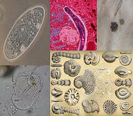

Проти́сты (др.-греч. πρώτιστος «самый первый, первейший») — парафилетическая группа, к которой относят все эукариотические организмы, не входящие в состав животных, грибов и растений. Название введено Эрнстом Геккелем в 1866 году, однако в современном понимании его впервые использовал в 1969 году Роберт Уиттекер, автор «системы пяти царств». Традиционно протистов подразделяют на простейших (Protozoa), водоросли (Algae) и грибоподобные организмы; все эти группы имеют полифилетическую природу и не используются в качестве таксонов. Как и многие другие группы, выделенные по «остаточному принципу», протисты не обособляются по каким-либо положительным характеристикам. Как правило, протисты — одноклеточные организмы, хотя многие из них способны образовывать колонии; для ряда представителей характерно многоклеточное строение, иногда достигающее сложной организации (например, у некоторых бурых водорослей).